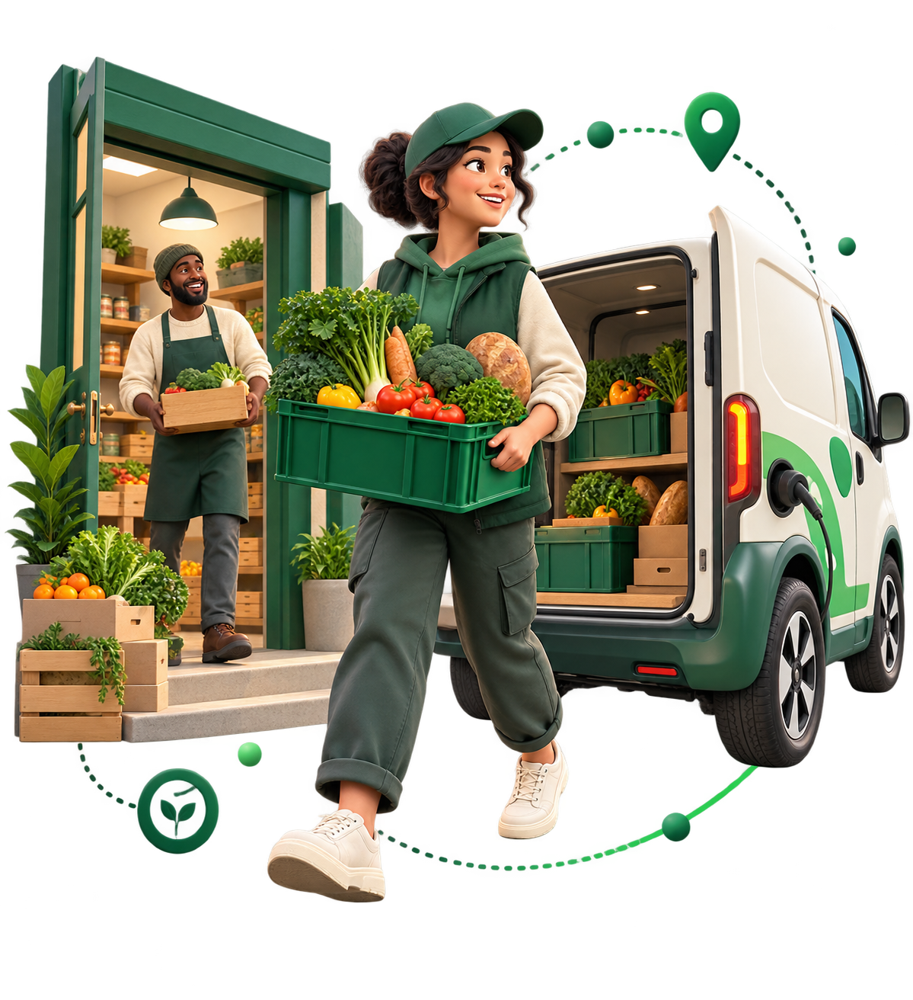
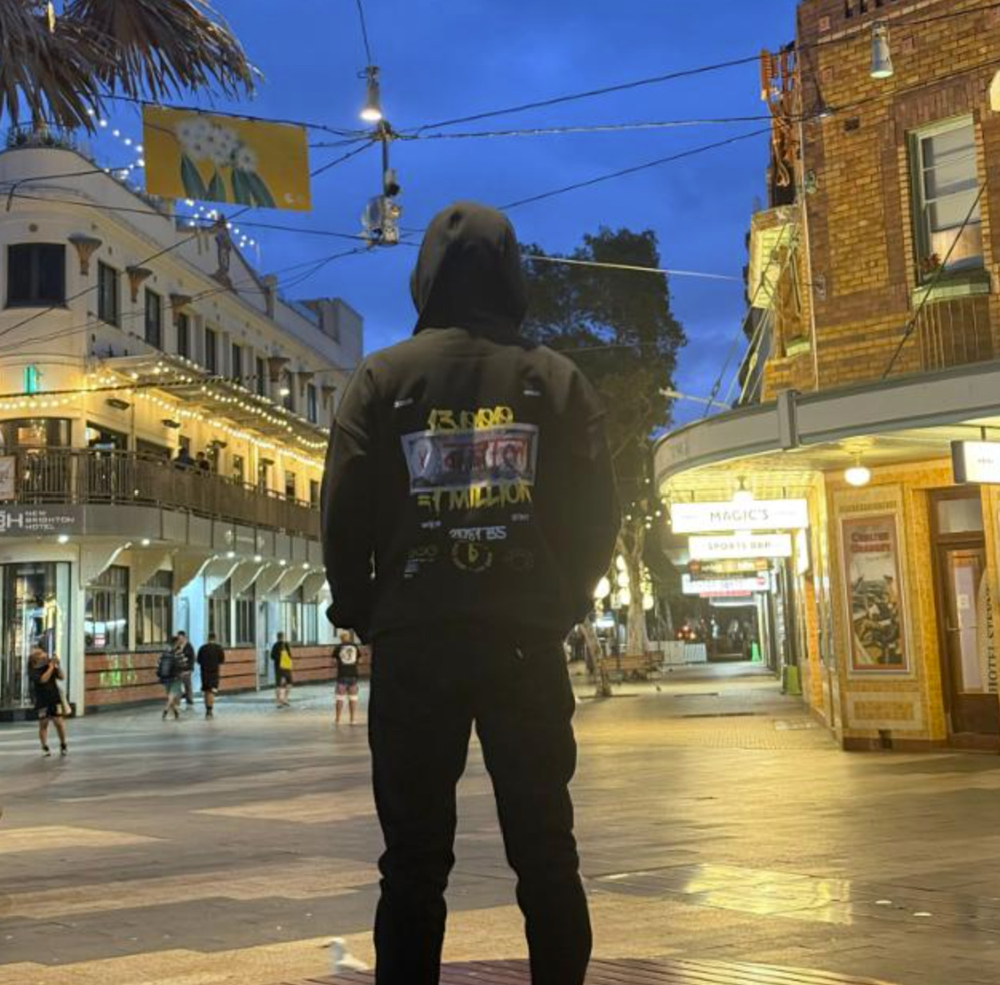

Informal Communication
Surplus availability is often shared through calls and group messages. Time-sensitive food may expire before a volunteer can be organised.
FoodBridge is a proposed digital food rescue and redistribution platform connecting local food donors, volunteer drivers and community food relief organisations.
One connected platform
Donors • Volunteers • Pantries

FoodBridge is an open-source, web-based surplus food matching and logistics management platform being designed for community food relief organisations.
It aims to replace fragmented phone calls, group messages and manual coordination with a transparent workflow—helping edible food reach community organisations quickly, before it expires, while making every step trackable and measurable.
Current food rescue operations can be slowed by fragmented communication, disconnected logistics and limited visibility.
Surplus availability is often shared through calls and group messages. Time-sensitive food may expire before a volunteer can be organised.
Donors, drivers, pickup windows and pantry capacity lack real-time coordination—leading to missed pickups, delays and duplicate arrangements.
Organisations can struggle to record food rescued, meals provided and the evidence needed for reporting, funding and partnerships.
FoodBridge is designed to coordinate each step from the moment food becomes available to the moment its community impact is recorded.
Donors post food type, quantity, photos, location and pickup window.
The system evaluates availability, proximity, requirements and capacity.
The volunteer accepts, completes safety checks and records collection.
Food reaches the selected pantry and the recipient confirms arrival.
Rescues, kilograms, meal equivalents and collections are recorded.
Each role receives a focused experience for the part they play in a successful food rescue.
Cafes • Restaurants • Supermarkets • Caterers
Mobile-first rescue coordination
Community food relief organisations
Operational oversight and reporting
FoodBridge’s proposed MVP brings identity, logistics, verification and impact reporting into one accessible system.
A pragmatic stack selected for reliability, maintainability and a $0 software licensing target.
Our goal is to deliver a functional and tested FoodBridge MVP within an eight-week Agile development cycle.
The proposed platform aligns practical community coordination with broader goals for hunger, waste reduction and partnership.
Connecting businesses, community volunteers, charities and other community stakeholders through one digital system.
Helping surplus edible food reach community organisations and people experiencing food insecurity.
Improving how surplus food collection and redistribution are coordinated across the community.
SDG references are used for educational alignment. Cards are original and do not reproduce official UN graphics.
An Agile delivery plan organised around core dependencies, continuous validation and a practical handover.
Three collaborators working across the project’s design, engineering, logistics and evaluation needs.
Project Team Member
Danfe SolutionProject Team Member
Danfe Solution
Project Team Member
Danfe SolutionDatabase schema • Django ORM models • Authentication • Proximity matching • Security
Notification engine • Background jobs • Distance calculations • Deployment • Infrastructure
Bootstrap/HTMX interfaces • Donor and driver screens • Impact reporting • UAT
Work areas represent the project scope and are not assigned to individual team members.
A practical platform proposal for faster food rescue, clearer coordination and measurable community impact.
Back to the top